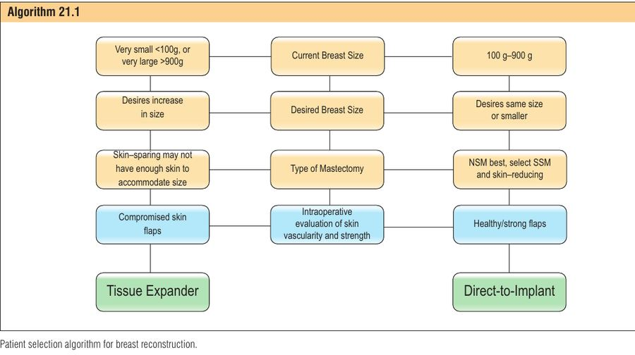
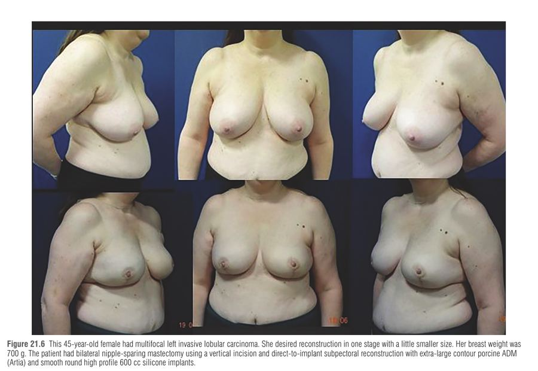
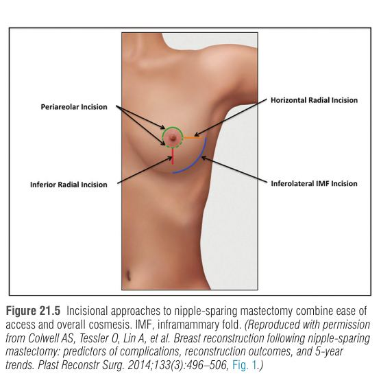
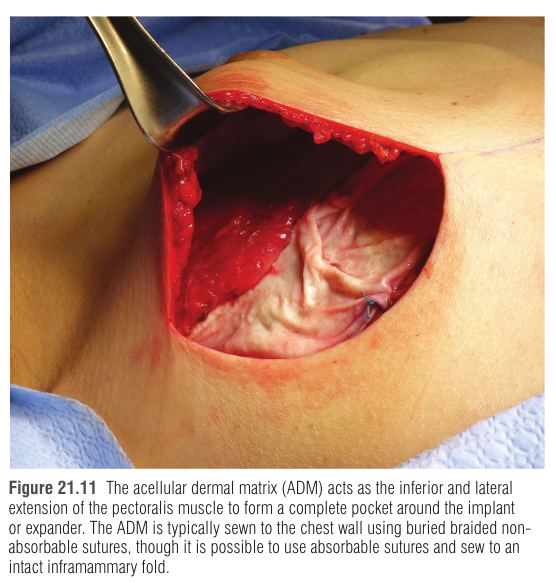

הפרק מציג את הגישה של שחזור ישיר לשתל (DTI – direct-to-implant): מיד אחרי כריתת השד מניחים שתל קבוע בגודל מלא בכיס "דו-מישורי" (dual-plane) – החלק העליון-המדיאלי של השתל מכוסה בשריר הפקטורליס מז'ור (Pectoralis major), והחלק התחתון-הצדדי במטריקס דרמלי חסר תאים (ADM – acellular dermal matrix). היתרון: ניתוח אחד במקום שני שלבים (מרחיב רקמה ← החלפה לשתל), ללא הרחבות רבות בקליניקה. המחיר: הצלחה תלויה כמעט כולה באיכות ואספקת הדם של דש העור לאחר הכריתה ובטכניקה מדויקת.
שרשרת ההתפתחות: שתל תת-עורי (נמק דש, איבוד שתל, קפסולה) ← כיסוי תת-שרירי מלא (בטוח יותר, אך כיס הדוק שמעוות צורה וגבולות גודל) ← מרחיב רקמה תת-שרירי (שני שלבים, גודל גדול יותר) ← ADM + כריתה משמרת עור/פטמה שאפשרו כיס גדול מספיק לשתל מלא בשלב אחד.
שני שינויים שהחזירו את ה-DTI: (1) ריפוי: ADM מרחיב את הכיס וייצר כיסוי חלקי-שרירי עם קוטב תחתון טוב יותר; (2) אונקולוגיה: מעבר לכריתה משמרת עור (SSM) ומשמרת פטמה (NSM) הותיר דש עור מסופק דם טוב יותר וכיס שיכול להכיל נפח שתל שלם ללא הרחבה.
מטא-אנליזה מ-2016 של המחקרים המוקדמים מצאה אסתטיקה דומה אך יותר סיבוכים ואיבוד שתל ב-DTI. מאז התוצאות השתפרו בעקביות – עקומת למידה משמעותית: במרכז המחברים שיעור הסיבוכים ירד בחצי אחרי השנה הראשונה, ועם ניסיון אין הבדל בסיבוכים או בשיעור רוויזיות בין DTI לשני שלבים. יתרונות נוספים: עלות כוללת נמוכה יותר בניתוחי עלות-תועלת, וחזרה מהירה לחיים המקצועיים והאישיים.
כריתה ← ירידה חדה בזילוף העור (נתק ממקורות ההזנה של רקמת השד) ← שתל בנפח מלא מעלה את הלחץ והמתיחה על הדש ← אם אספקת הדם גבולית: איסכמיה ← נמק עור/פטמה ← חשיפת שתל/זיהום. לכן בודקים את הדש לפני שמחליטים על נפח.
נוסף על הנקודה הזו: הפקטורליס לבדו קטן מדי לכיסוי שתל מלא (פרט לשדיים קטנים מאוד); הוא מכסה את הקוטב העליון והמדיאלי בלבד. חסרים השליטה בקפל התת-שדי (IMF – inframammary fold) והגבול הצידי. ה-ADM משמש כ"המשך" של השריר: מגדיר את הגבול התחתון והצדדי של הכיס, מגדיל אותו, משפר הקרנת קוטב תחתון, ובחומרים לא נספגים מונע גם התכווצות שריר ו-"window-shading" (השריר מתכנס כמו וילון).
ההחלטה הסופית על סוג השחזור מתקבלת תוך-ניתוחית. המטופלת מסכימה מראש הן לשתל קבוע והן למרחיב רקמה (ואף לאפשרות של אי-שחזור מיידי).
איור סכמטי: שריר בקוטב העליון-מדיאלי, ADM (קו מקווקו) בקוטב התחתון והצדדי. אין כאן קנה מידה אמיתי.
| גורם | מתאים ל-DTI | עדיף שני שלבים / דחייה |
|---|---|---|
| גודל שד | 100–900 גרם, רצון לשמור על גודל או לגדול מעט (הגדלה בדרך כלל 50–100 סמ"ק) | <100 גרם או >900 גרם; רצון בשינוי משמעותי; אסימטריה משמעותית |
| סוג כריתה | NSM (מומלץ בפטוזיס דרגה 1–2) או SSM/skin-reducing | NSM בפטוזיס 3 בדרך כלל דורש שלבים, או SSM |
| אספקת דם | עור בריא, דימום בקצה הדרמיס, עובי אחיד | סוכרת לא מאוזנת, עישון פעיל/עדכני, דיכוי חיסוני ממושך, עור באיכות ירודה = התוויות נגד |
| גיל, השמנה, צלקות קודמות | אינם התוויית נגד (גם ניתוחי הקטנה/הגדלה/כריתה חלקית קודמת) | — |
| כימותרפיה | בטוחה לשחזור מיידי (ביחס לסיבוכים וכישלון) | — |
| קרינה | קרינה קודמת קלה-בינונית: לעתים ניתן, עדיף שתל בנפח שמרני על פני מרחיב | קרינה מעלה תמיד סיבוכים (ניוון, פיברוזיס, פגיעה בכלי דם ובריפוי) |


| חתך | יתרון | חיסרון |
|---|---|---|
| Inferolateral IMF | קוסמטיקה מעולה; צלקת חבויה; מעט סיבוכים עם ניסיון | עור בין הפטמה לחתך עלול להיפגע בתחילת הדרך (משיכת דש) |
| אנכי (Vertical) | ממקם ומרים פטמה בשד גדול | יותר סטרס איסכמי לעור ← פחות סיכוי ל-DTI |
| פריאריאולרי | גישה מוכרת לכירורג האונקולוגי | סיכון גבוה יותר לנמק פטמה וסיבוכים; מלא-עובי בדרך כלל נמנע |
| לרוחבי (Lateral) | שימור מירבי של אספקת דם לפטמה; הכי בטוח | צלקת בולטת; נטייה למשוך פטמה לרוחב |
| הארכת צלקת קיימת | פחות צלקות חדשות | מיקום לא אופטימלי; להימנע מצלקת לומפקטומיה מוקרנת |
הכריתה נעשית ברמת הפאשיה השטחית של השד (superficial breast fascia) – מקסימום כריתה אונקולוגית עם מינימום נזק לכלי הדם התת-עוריים, וביצוע עדין ללא משיכה מוגזמת. חשוב לשמר את "טביעת הרגל" של השד ואת ה-IMF.
| מישור | Subpectoral (Dual-plane) | Prepectoral |
|---|---|---|
| כיסוי רקמה רכה | כיסוי עליון טוב, קווי מתאר חלקים | שתל נראה יותר; קווים לא סדירים ו-rippling בקוטב העליון |
| הרמה (Uplift) | הרמה טובה יותר; השתל יושב גבוה יותר | פחות הרמה; מתאים יותר לשד נגדי עם פטוזיס |
| Animation | יש (בדרך כלל קלה) | אין או מינימלית |
| כאב | יותר בשבוע הראשון (אין הבדל ארוך-טווח) | פחות; פחות כאב אחרי קרינה כשהשריר מוחרג |
| עלות חומר | נמוכה יותר | גבוהה יותר |
| שתל | עד 800 סמ"ק | עד 800 סמ"ק |
| מדיאליזציה | מצוינת (פרט לסטרנליס רחב) | מצוינת בכל המקרים; יותר סיכון ל-symmastia |
כלל אצבע של המחברים: בשחזור דו-צדדי – תת-שרירי (הרמה וקווי מתאר חלקים); בשחזור חד-צדדי – פרה-פקטורלי מתאים לשד נגדי עם פטוזיס, ותת-שרירי מתאים לפטוזיס מינימלי. בציפייה לקרינה שוקלים פרה-פקטורלי. (השוו לפרק 20 בכרך.)

| חומר | יתרון | חיסרון |
|---|---|---|
| ADM אנושי (Alloderm וכו') | גמיש, חזק, משתלב ברקמה (biointegration), עשוי להפחית capsular contracture – חשוב בקרינה קודמת/צפויה | עלות גבוהה |
| ADM חזירי/בקרי (Artia וכו') | חלופה ביולוגית | עלות |
| סינתטי נספג (Vicryl, PDS) | זול, זמין, נוח, תגובה דלקתית מזערית, עמידות לביופילם (תיאורטית) | תמיכה ארוכת טווח לא צפויה ← bottoming out או קפסולה |
| סינתטי לא נספג (Prolene, Marlex, פוליפרופילן מצופה טיטניום) | תמיכה ויציבות | אין נתוני בטיחות ארוכי טווח לחשיפה בזיהום או בקרינה; אין כיסוי רקמה, זילוף מחדש או השתלבות |
שתל: נבחר לפי גודל, הקרנה, קוטר בסיס וחומר מילוי. עקב הקשר בין BIA-ALCL לשתלים מרקמים, רוב המנתחים בארה"ב מציעים שתלים חלקים ועגולים בלבד. סיליקון מועדף על מלח (מראה ותחושה טבעיים, בטיחות ארוכת טווח דומה, העדפת מטופלות ב-BREAST-Q). ADM לפי גודל: בינוני עד ~400 סמ"ק, גדול עד ~600, גדול-מאוד מעל 600 (וגם בשריר קטן).
בדיקה: צבע, חום, מילוי קפילרי, דימום בקצה הדרמיס, עובי ואחידות; סימן טוב = צבע תקין ו"נקודות" שומן על צד פנים העור. טכנולוגיות הערכת זילוף (פרק 18) מפחיתות נמק דש, בעיקר לכירורג פחות מנוסה. אחר כך sizer: קובע אם אפשר בכלל שתל מלא ואיזה נפח הכיס יכיל. ב-NSM צריך גם לבחור שילוב שממרכז את הפטמה. דש מפוקפק ← שני שלבים, ובחומרה קשה ← שחזור מאוחר.
פתרון תקלות: ADM קצר בהיקף ← תפירה לשולי דש serratus שהורם לרוחב הרצוי (יתרון: מכסה חתך IMF-צדדי בפירוק/קרינה; חיסרון: כאב ותחלואה); או להתחיל את התפירה מלרוחב ולהשאיר אזור קטן מדיאלי ללא כיסוי (בדרך כלל לא נראה).

| נושא | פרטים |
|---|---|
| אשפוז | שחרור לרוב באותו יום לאחר 3 שעות השגחה; ERAS: Tylenol + Gabapentin + חסם פראוורטברלי |
| חבישה/חזייה | נשארות עד ביקור שבוע אחד; להימנע מלבוש לוחץ (מגביר איסכמיה בדש). מקלחת אחרי 48 שעות עם Tegaderm |
| Nitroglycerin | משחה במינון נמוך על הדש אם חיוניות העור/הפטמה מוטלת בספק: פחות נמק (3.8% לעומת 23.8% בחבישה רגילה). לא ליישם בלחץ דם נמוך |
| דרנז'ים | הסרה כשפלט <30 סמ"ק/יום ל-2 ימים; לרוב אחד אחרי שבוע, אחד אחרי שבועיים; לא יותר מ-4 שבועות |
| אנטיביוטיקה | בדרך כלל עד הוצאת הדרנז'ים, אך מחקרים מטילים ספק בהועלתה מעבר ל-24 שעות |
| פעילות | הליכה מיידית; פעילות קלה אחרי 6 שבועות; מאמץ וטבילה בבריכה/ים – 3 חודשים; עיסוי מדיאלי עדין מחודש אחד (שתלים חלקים) למניעת capsular contracture |
| מה לצפות | קווי מתאר לא סדירים ו-bruising (מחמיר בשבוע הראשון); פטמה כהה או קשקשת – נצפית 3–4 שבועות לפני הסרת נמק מתמשך; משחת אנטיביוטיקה |
| סיבוך | מנגנון | ניהול |
|---|---|---|
| נמק עור (הסיבוך הקצר-טווח השכיח ביותר) | איסכמיה מהכריתה ו/או לחץ מהשתל עצמו | נמק קל (2–5 מ"מ) – דברידמן וסגירה בהרדמה מקומית; נרחב – הקטנת שתל, המרה למרחיב, או הוצאת שתל ללא החלפה. נמק חייב מעקב הדוק, בלי שיפור מהיר – ניתוח למניעת חשיפה |
| זיהום | ירידה בזילוף העור לאחר כריתה ← רגישות; ביופילם על השתל | אנטיביוטיקה פה או IV (כיסוי מתיצילין-עמידים, MRSA, ו-Gram-negative); כישלון ← שטיפה והוצאת שתל עם/בלי החלפה; שיעור הצלת שתל 37.3% באשפוז. ב"זיהום פריפרותטי" – הוצאה וסגירה על דרנז'ים. זהירות בהחלפה לפני כימו/קרינה. לשקול Gram stain תוך-ניתוחי |
| סרום | נוזל שמפעיל לחץ על הדש ויכול להזדהם | ניקוז מיידי בהנחיית US; אם נמשך – שטיפה וניקוי בחדר ניתוח ותרבית |
| המטומה, malposition, contour | — | ניקוז/רוויזיה, קפסולורפיה, החלפת שתל |
| Capsular contracture | קפסולה מתכווצת סביב השתל | MRI לשלול קרע במחלה מאוחרת; קל – עיסוי ו-Singulair; חמור/קרע – קפסולקטומיה מלאה או חלקית והחלפה |
| Animation deformity | התכווצות פקטורליס | בדרך כלל קלה; חמורה – המרה לפרה-פקטורלי |
S – Skin flap: זילוף וחוזק דש העור (צבע, מילוי קפילרי, דימום בקצה).
I – Inflate the sizer: בדיקת sizer – אדום-עמוק/כחול-אפור = איסכמיה ← מרחיב.
Z – Zone of size: שד 100–900 גרם, שינוי גודל עד 50–100 סמ"ק.
E – Expectations: הסכמה מראש לשתל או למרחיב; ההחלטה הסופית בחדר הניתוח.
דמיינו אוהל שבנוי כך: הגג הוא השריר (פקטורליס) שמכסה את הקוטב העליון, וערסל חזק (ה-ADM) תלוי בתחתית ומחזיק את "האורח" (השתל). אם הערסל רפוי מדי – האורח צונח לרצפה (bottoming out); אם הוא הדוק ומתוח – האורח יושב במקום. ואם הדש (הבד של האוהל) דק ומרוט – אסור להכניס אורח כבד מדי, כי יקרע.
לא הוטמע סרטון: לא אומת סרטון מתאים ממקור מהימן.
אישה בת 43 נשאית BRCA, עם שד 350 גרם ופטוזיס דרגה 1, עוברת כריתת שד דו-צדדית משמרת פטמה בחתך IMF תחתי-צדדי. היא מעוניינת לשמור על גודל דומה, בניתוח אחד. אחרי הכריתה הדש בצבע ורוד תקין עם דימום בקצה הדרמיס; ה-sizer מנופח ל-350 סמ"ק ללא שינוי צבע. הכיס נוצר תת-שרירית עם ADM גדול, והשריר משוחרר עד 4 ו-8 בשעון; מונחים שתלים חלקים ועגולים. ביום 5 אחרי הניתוח מופיע נמק קשקשי של 3 מ"מ בשולי החתך.